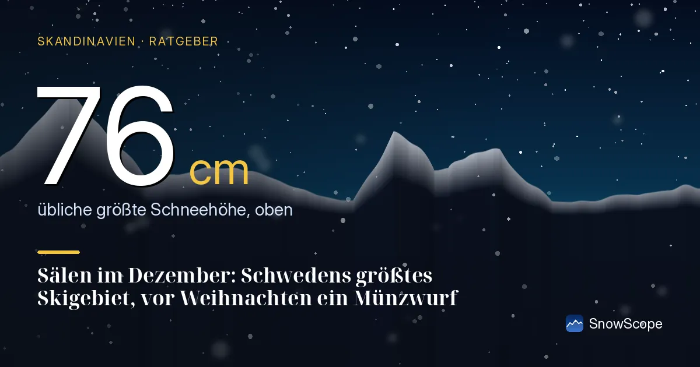
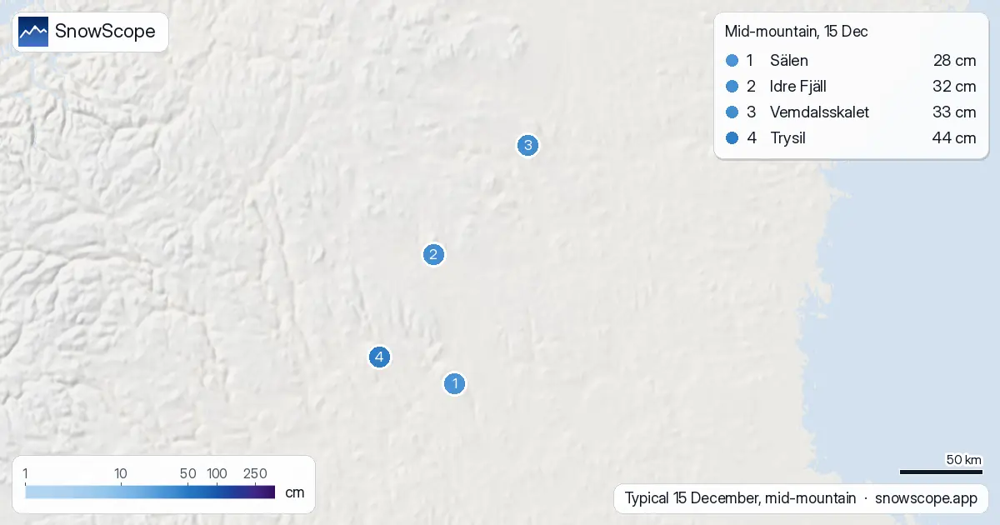

Sälen im Dezember: Schwedens größtes Skigebiet, vor Weihnachten ein Münzwurf
In Sälen lernt halb Schweden Skifahren: 80 km kartierte Pisten und 96 Lifte auf niedrigen, runden Hügeln. Für den Dezember ist unsere Schneehistorie über 46 Winter deutlich. An einem typischen 15. Dezember liegen im Gebiet 28 cm, und in der Woche vom 15. bis 21. Dezember hatten nur 48 % der Winter mindestens 30 cm.
Die Live-Schneeprognose für Sälen in der SnowScope-AppSchneehöhen, Pulverschnee-Alarme und 3D-Karte, gratis.
Dezember, früher und heute
Die Lifte in Sälen laufen zwischen 568 m und 886 m, und die Hügel sind so sanft, dass unsere Historie einen Wert für das ganze Gebiet gibt. Dieser Wert ist gesunken: Das Dezembermittel fiel von 33 cm in den ersten 15 Wintern auf 24 cm in den letzten 15, und der Anteil der Weihnachtswochen mit 30 cm sank von 80 % auf 47 %.
Der letzte Winter war ein klares Beispiel: 16 cm am 15. Dezember und 4 cm am 24. Dezember.


Die Wochen, die noch liefern
Die Weihnachtswoche ist die beste Wette, mit 61 % der Winter bei mindestens 30 cm. Davor liegen die Chancen bei je 35 % in den ersten beiden Wochen und 48 % vom 15. bis 21. Dezember. Der übliche erste Tag mit 30 cm ist der 17. Dezember, kurz vor den Ferien.
Tief ist Sälen im Dezember nie (nur 11 % der Weihnachtswochen hatten 60 cm oder mehr), aber selten aper: In keinem unserer 46 Winter war der Boden am 15. Dezember schneefrei. Ohne die Arbeit des Skigebiets auf den Pisten ist eine dünne Decke aber das normale Dezemberbild.
Der Preis für die Woche
Die Skipässe für Sälen werden mit dynamischen Preisen im offiziellen Onlineshop des Betreibers verkauft. Am 13. November 2026 konnten wir auf der offiziellen Seite keinen festen Betrag ablesen, daher nennen wir keinen. Der Preis hängt von deinen Terminen ab; früh und online kaufen.
Trysil in denselben Jahren
Trysil, gleich jenseits der norwegischen Grenze, ist im Dezember die bessere Wahl in der Nähe. Seine Mittelstation (758 m) hat an einem typischen 15. Dezember 44 cm, und 83 % der Winter hatten dort in der Woche vom 15. bis 21. Dezember 30 cm. Sein Gipfel auf 1109 m liegt höher als alles in Sälen.
Auch Trysil hat über die Jahre Schnee verloren, aber von einem höheren Niveau aus: In der Weihnachtswoche hatten 80 % der letzten 15 Winter noch 30 cm an der Mittelstation.
Tipps zum Buchen
Wenn du Sälen wegen seiner Familienfreundlichkeit liebst, fahr Ende Dezember oder besser im Januar und Februar. Wenn nur Dezember geht, schau eine Woche vorher in den aktuellen Schneebericht des Gebiets – oder fahr weiter nach Trysil.
Tipps für Skifahrer
- Lieber die Weihnachtswoche als frühere Termine: 61 % unserer Winter hatten dann 30 cm, gegen 35 % Anfang Dezember.
- Umbuchbar buchen: In den letzten Wintern sank der Anteil guter Weihnachtswochen auf 47 %.
- Vor dem Bezahlen mit Trysil vergleichen: Seine Mittelstation hatte Mitte Dezember in 83 % der Winter 30 cm.
- Kurze Tage und Kälte: das Skifahren um die hellen Stunden planen und Kinder warm anziehen.
Weitere Karten (externe Seiten)
Quellen und Nachweise
- Sälen: official lift-pass page of the operator (prices by date; no fixed price quoted), checked 13 November 2026 www.skistar.com/en/winter/skipass/buy-skipass/lift-pass-salen/
- Trysil: official lift-pass page of the operator (prices by date; no fixed price quoted), checked 13 November 2026 www.skistar.com/en/winter/skipass/buy-skipass/lift-pass-trysil/
Zu diesen Zahlen
Schneewerte: SnowScope-Schneehistorie, 46 vergangene Winter (1980-81 bis 2025-26) auf den Höhen des Skigebiets, höhenkorrigiert (eine Schätzung für eine Fläche, keine Meldungen des Skigebiets); „guter Schnee“ = im Wochenmittel 30 cm oder mehr am Boden. Karte: unsere übliche Schneehöhe am 15. Dezember, nach Höhe auf das Gelände verteilt. Pisten und Lifte: OpenSkiMap-Kartierung. Skipasspreise: offizielle Preislisten der Skigebiete, geprüft am 13. November 2026; Preise können sich ändern.
Offizielle Lawinenlageberichte: Lavinprognoser (Naturvårdsverket)
Diesen Bericht zitieren
Für Forschung, Lehre oder Presse: Zahlen und Grafiken sind unter CC BY 4.0 mit dieser Quellenangabe frei nutzbar.
SnowScope (2026), Sälen im Dezember: Schwedens größtes Skigebiet, vor Weihnachten ein Münzwurf, https://snowscope.app/blog/de/2026/11/salen-december-ski-trip-honest-snow-cost.html, abgerufen am 2026-11-14
SnowScope (Atlas Labs). (2026, November 14). Sälen im Dezember: Schwedens größtes Skigebiet, vor Weihnachten ein Münzwurf. SnowScope snow reports. https://snowscope.app/blog/de/2026/11/salen-december-ski-trip-honest-snow-cost.html
BibTeX
@misc{snowscope2026salendecemberskitriphone,
author = {{SnowScope (Atlas Labs)}},
title = {Sälen im Dezember: Schwedens größtes Skigebiet, vor Weihnachten ein Münzwurf},
year = {2026},
month = nov,
howpublished = {\url{https://snowscope.app/blog/de/2026/11/salen-december-ski-trip-honest-snow-cost.html}},
note = {Published 2026-11-14 19:44 UTC; accessed 2026-11-14}
}· CC BY 4.0 · Methoden, Daten und Werkzeuge →
Sälen: Schnee und Temperatur nach Höhe, dieser Winter vs letzter (Werkzeuge) →
Sälen folgen
Gratis: eine Nachricht, wenn Neuschnee kommt, und jeden Morgen die Vorhersage.